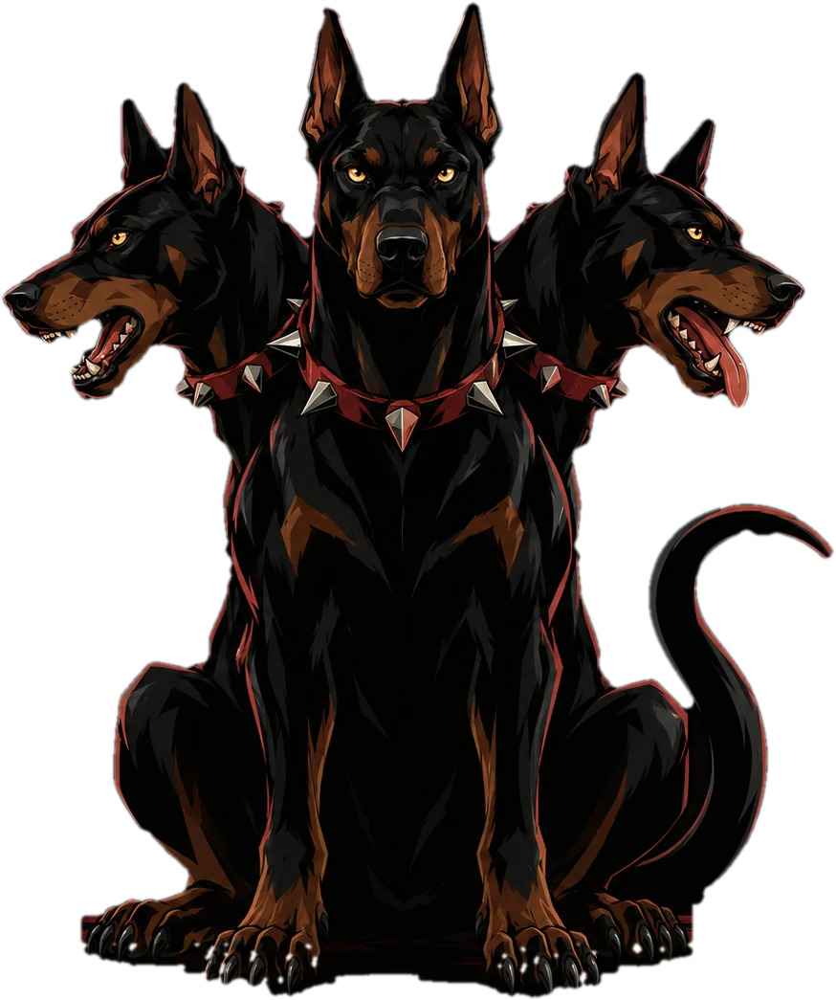
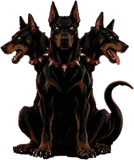

Sou o Cerberus. Guardo os portões do Hades, mas hoje sou o seu guia pelos deuses, heróis, criaturas e lugares da mitologia grega.
Começar a jornada → Conhecer o guia
Filho de Tífon e Equidna, vigio a entrada do Submundo há milênios. Cada uma das minhas cabeças enxerga os mitos de um jeito diferente.
Conhece as origens: quem é filho de quem, como o mundo foi dividido e por que o Olimpo vivia em guerra.
Narra as batalhas e aventuras: monstros derrotados, viagens pelo mar e heróis que desafiaram os deuses.
Vai direto ao ponto: resumos curtos de cada mito, para entender rápido e lembrar depois.
Quatro caminhos. Escolha por onde começar.
Zeus, Hades, Poseidon e os olimpianos que dividiram o mundo entre si.
IIHéracles, Perseu, Aquiles e Odisseu: mortais que desafiaram o destino.
IIIMedusa, a Hidra de Lerna, o Minotauro e, claro, eu mesmo.
IVDo Olimpo ao Tártaro, passando pelo Submundo, a minha casa.
No último dos doze trabalhos, Héracles desceu ao Submundo para me capturar. Hades permitiu, com uma condição: nada de armas. Ele me venceu com as próprias mãos, me levou até o rei Euristeu e depois me devolveu ao meu portão.
Acerte para provar que conhece o Olimpo.
Crie sua conta para salvar seus mitos favoritos.
Clique em mim!
